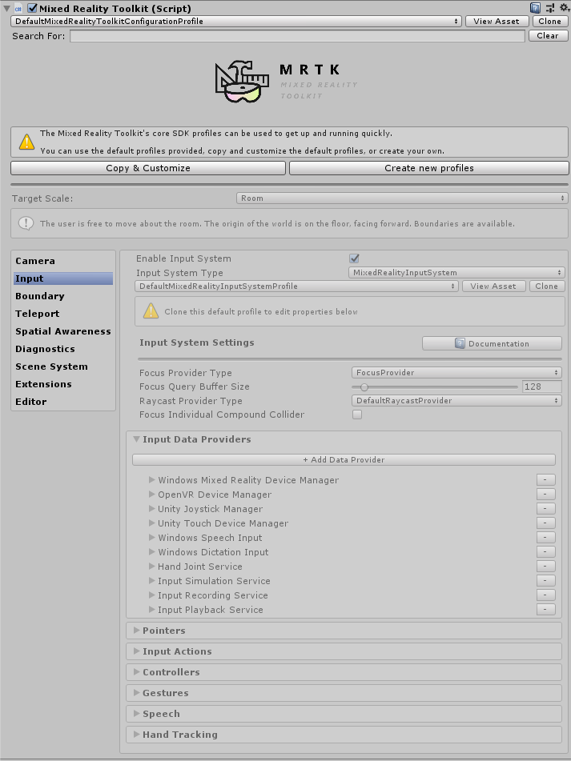

配置文件 Profiles
配置MRTK的主要方法之一是通过foundation包中提供的许多配置文件。场景中的主要MixedRealityToolkit对象将具有活动配置文件(active profile)，该配置文件本质上是一个可编写脚本的对象。顶层的MRTK配置文件包含主要核心系统的每个核心的子配置文件数据，每个核心系统的设计目的是配置其相应子系统的行为。此外，这些子配置文件也是可编写脚本的对象，因此可以包含对位于它们之下一层的其他配置文件对象的引用。从本质上说，有一个完整的连接概要树，它组成了如何初始化MRTK子系统和特性的配置信息。
For example, the Input system's behavior is governed by an input system profile, for example the DefaultMixedRealityInputSystemProfile (Assets/MRTK/SDK/Profiles). It's highly recommended to always modify the profile ScriptableObject assets via the in-editor inspector.
例如，input system的行为由一个input system配置文件控制，例如' DefaultMixedRealityInputSystemProfile (Assets/MRTK/SDK/Profiles)。强烈建议始终通过in-editor inspector修改配置文件ScriptableObject资源。

配置文件 Inspector
Note
While it is intended that profiles can be swapped out at runtime, this currently does not work
默认配置文件 Default profile
MRTK提供了一组默认配置文件，涵盖了MRTK支持的大多数平台和场景。例如，当你选择DefaultMixedRealityToolkitConfigurationProfile (Assets/MRTK/SDK/Profiles) 时，你将能够在VR (OpenVR, WMR)和HoloLens (1和2)上尝试场景。
注意，因为这是一个通用的使用配置文件，所以它没有针对任何特定的用例进行优化。如果你想要在其他平台上更好的性能/特定设置，请看下面的其他配置文件，它们在各自的平台上做了一些微调。
HoloLens 2 配置文件
MRTK还提供了一个为HoloLens2上部署和测试优化的默认配置文件
: DefaultHoloLens2ConfigurationProfile (Assets/MRTK/SDK/Profiles/HoloLens2)。
当提示为MixedRealityToolkit对象选择配置文件时，使用此配置文件而不是默认选择的配置文件。
HoloLens2配置文件和默认配置文件之间的主要区别是:
禁用的 特性:
- Boundary System
- Teleport System
- Spatial Awareness System
- Hand mesh visualization (due to performance overhead)
启用的 系统:
- The Eye Tracking provider
- Eye input simulation
相机配置文件设置(Camera profile settings)被设置为匹配，这样编辑器质量和播放器质量是相同的。这不同于默认的相机配置文件，默认配置文件中不透明的显示设置为更高的质量。
这一变化意味着编辑器内的质量将会降低，这将更接近于在设备上呈现的内容。
Note
根据客户的反馈，空间感知系统在默认情况下是关闭的——这是一个有趣的可视化界面 但通常是关闭的，以避免启用后的视觉干扰和额外的性能打击 . 系统可以通过以下方法重新启用 此处为指导.